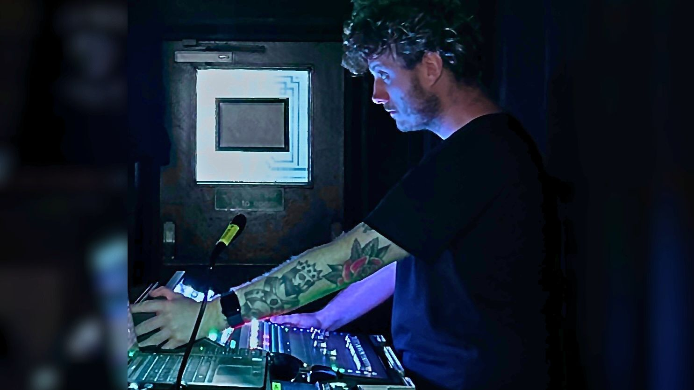
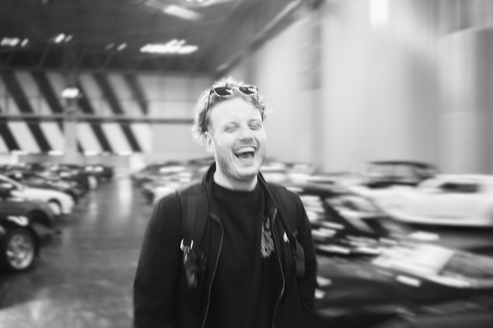

Gravity Media · TNT Sports
FA Cup Final 2026.
Sound assist at Wembley, working close to talent on presenter audio.
Freelance Sound Engineer & AV Technician
Live sound, broadcast and corporate AV for clients including Vodafone, BBC, TNT Sports and Iconic Auctioneers.

Trusted on productions for
Gravity Media · TNT Sports
Sound assist at Wembley, working close to talent on presenter audio.
Cloudbass · BBC
Ongoing sound assist and boom op — including the 2024 General Election Leaders' Special.
NEP Group · Cloudbass
Outside broadcast patching and sound support on top-flight football, nationwide.
JaMa Productions · Vodafone
Two years overseeing AV for Vodafone's VIP area and Charge & Connect lounge.
JaMa Productions
Perma-lance AV engineer for high-profile live automotive auctions across the UK.
Birmingham
FOH, monitors and patch at The Hare & Hounds, The Castle & Falcon and The Victoria.

About
I'm Jack — a freelance Sound Engineer and AV Technician based in Birmingham. I specialise in live sound, broadcast, and corporate AV across festivals, conferences, and televised productions.
I've delivered projects for Vodafone, BBC Question Time, TNT Sports, Premier League football broadcasts and Iconic Auctioneers, working alongside production companies including Gravity Media, AT Comms, Aztec, Immersive AV, NEP Group, and Cloudbass.
My main focus is sound — FOH, monitors, broadcast, and corporate AV — but I've also developed a strong interest in AV networking: Dante routing, VLANs, and AV over IP, which helps me troubleshoot and improve reliability on complex productions.
From the FOH position to the OB truck — sound first, with the systems knowledge to keep it reliable.
Front of House and monitor mixing across rock & roll, festivals, corporate events, and touring. Comfortable with high stage volumes, difficult acoustics, and demanding schedules.
Sound assist, boom op, and OB patching for televised productions including live sports, political debates, and broadcast events. Clean audio under pressure.
Conferences, breakout rooms, hybrid streaming, and theatre-style productions. Reliable operation, client communication, and polished delivery for high-profile brands.
EQ, system tuning, speaker alignment, delay management, and gain structure. Focused on getting rooms sounding right before the talent walks in.
Sennheiser and Shure multi-channel coordination, frequency planning, and IEM management for busy stages and high-RF environments.
Dante setup and troubleshooting in live environments, VLAN configuration, and AV over IP. Practical experience integrating IT and AV systems on productions.
Outside broadcast, corporate AV and live music — with the companies behind them.
Sound assist at Wembley Stadium for the FA Cup Final, broadcast live on TNT Sports. Working close to talent handling presenter audio, with responsibilities across patching, troubleshooting, and on-the-ground support throughout the production.
Sound assist on the Misfits Boxing event broadcast live on DAZN, held in Derby. On-set audio support for a high-energy live boxing production.
Sound assist on the Women's Six Nations broadcast, held in Bristol. On-set audio support for a major international rugby union production.
Nationwide sound assist on live Premier League coverage, supporting broadcast audio teams on high-profile match days.
Live broadcast sound assist for televised snooker coverage. Precision audio work in a quiet, high-pressure broadcast environment.
Ongoing sound assist and boom operator on the nationally-televised political programme. Highlight: the 2024 UK General Election Leaders' Special — live, high-pressure broadcast with no margin for error.
Patching and sound support for outside broadcast operations on top-flight and championship football. Nationwide coverage, demanding timelines, and high broadcast standards.
Sound assist across nationwide rugby league productions. On-set audio support ensuring clean capture for broadcast output.
Sound assist across nationwide Netball Super League productions. On-set audio support ensuring clean capture for broadcast output.
Perma-lance AV engineer for Iconic Auctioneers' high-profile live automotive auctions across the UK. Audio clarity across live and streamed settings, ongoing relationship.
Two consecutive years overseeing AV across Vodafone's exclusive VIP area and Charge & Connect lounge at Glastonbury Festival. Full-week deployment managing guest-facing AV including DJ build for the VIP retreat.
Onsite AV support across two years at one of the UK's largest Pride events, delivering reliable live event production in a large-scale outdoor environment.
Conferences, hybrid events, breakout rooms, theatre-style productions and corporate shows for a range of clients. Reliable AV operation, strong client communication, and polished delivery across brands and venues nationwide.
Mixing FOH and monitors, running patch for bands and touring acts across Birmingham's small venue circuit — including The Hare & Hounds, The Castle & Falcon, and The Victoria. Tight changeovers, varied acoustics, and real-world mixing in the trenches.
Former resident technician for Square One at Coventry University. Day-to-day AV setup, event support, and venue management for a busy campus entertainment venue.
Technical support for live streaming of county cricket fixtures. End-to-end broadcast operation for a professional sporting organisation.
The desks I work on confidently, and what I bring to the show.
Available for live events, broadcast productions, and corporate AV. Send a Teamtrack link or just say hello — I'll get back to you quickly.
hello@cybercole.co.uk
Live events, broadcast and corporate AV. Send a Teamtrack link or just say hello.